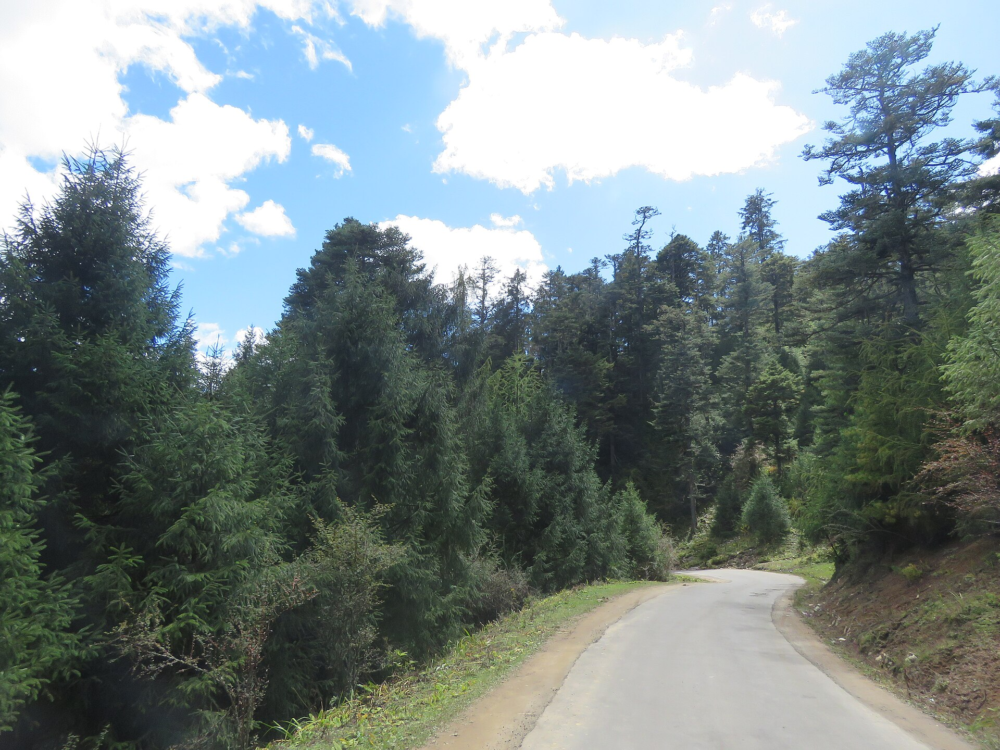
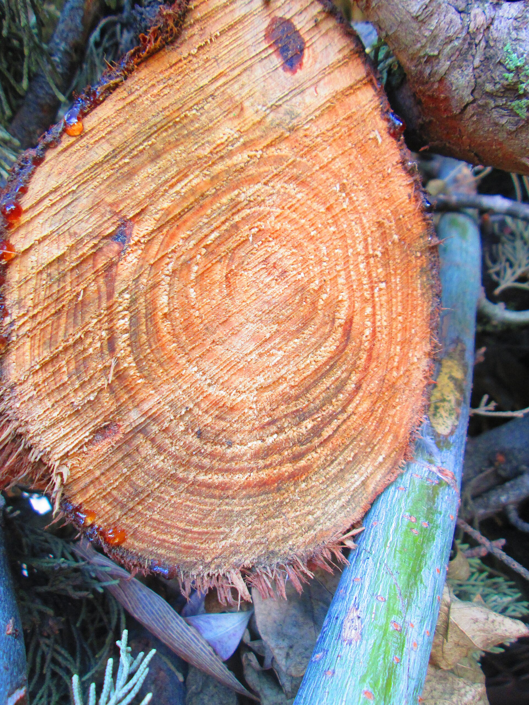
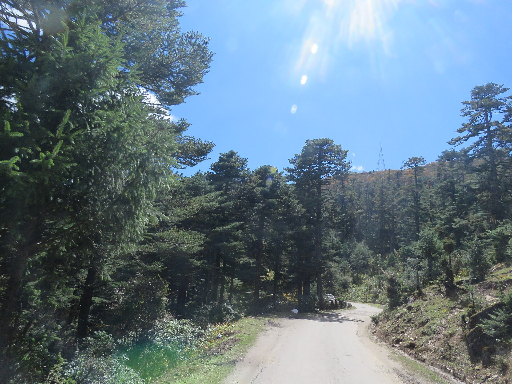
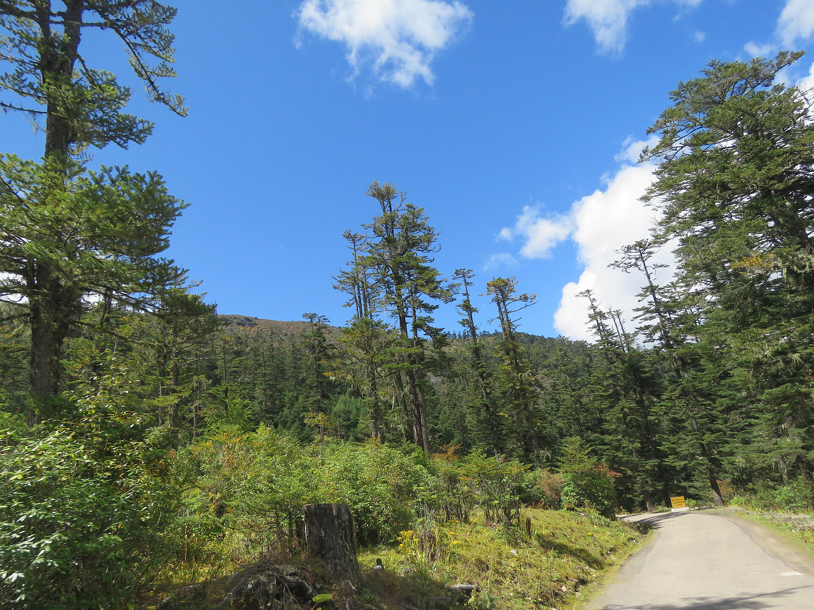
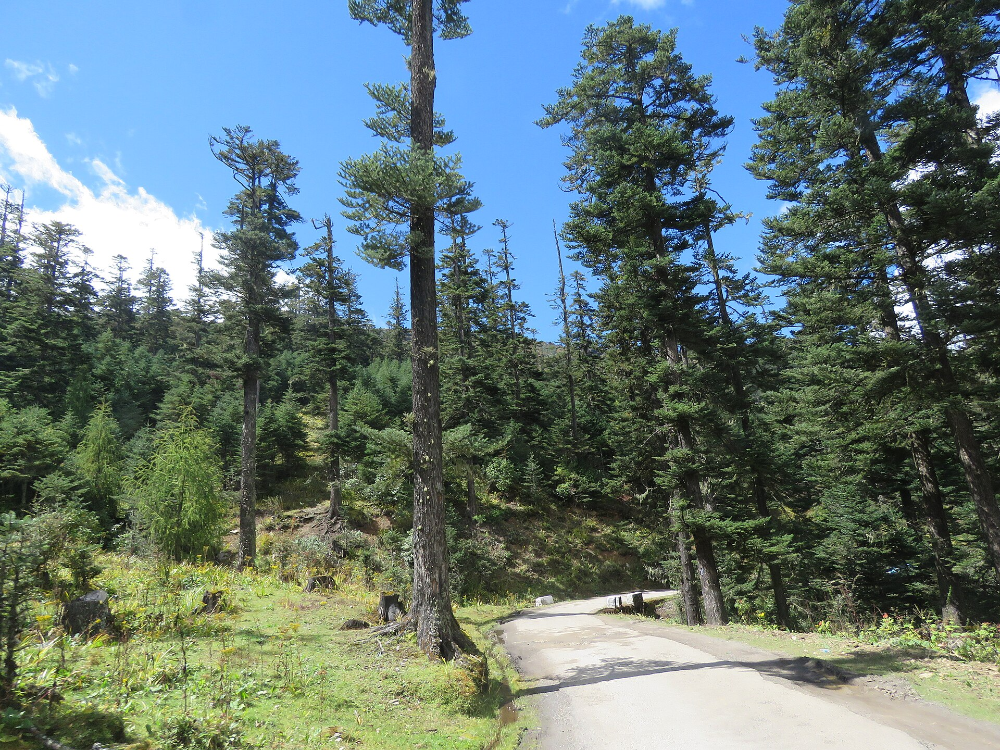

Course image · CC BY-SA 4.0
Course image · CC BY-SA 4.0
Age and Growth
of Trees
Determination of age · growth and increment · CAI, MAI and the culmination · increment percentage
Royal University of Bhutan
Forest Resources Planning and Management Division
Learning outcomes
Unit VII
This unit needs logarithms (outcome 3) and nth roots or powers (outcome 8). A plain four-function calculator will not get you through the assessment.
Age turns a measurement into a rate
Unit VII
A tree's size tells you nothing about its productivity until you know how long it took to get there. Two 40 cm trees, one aged 30 years and one aged 120, are entirely different propositions.
The productivity question. A site growing 300 m3/ha in 40 years is far more productive than one taking 120 years to do the same.
Size divided by time. Everything in Sections B, C and D of this unit is one way or another of expressing this single quantity.
Age fixes the timing of costs and revenues. A financial comparison also needs prices, costs, risk and a discount rate.
When to harvest a plantation. The m.a.i culmination in Section C is one benchmark; objectives and the plan decide.
How much may be felled each year without depleting the forest — an increment figure.
Height at a stated age. Without the age, top height means nothing at all.
Write this down and keep it: age converts a measurement into a rate. Diameter is a measurement; diameter per year is a rate. Only rates can be compared between sites, species and treatments.
How the unit is organised
Unit VII
How old is this tree, when nobody wrote down the year it germinated?
What exactly is growing, and what shape does a lifetime of growth take?
How much per year — and when should the crop be cut?
How fast, as a proportion of what is there — a physical rate.

Vinayaraj · CC BY-SA 4.0.jpg){kind=link}
Age of Trees
From records · from appearance · from whorls · from periodic measurements · from the rings themselves
Why the age of a tree is hard to know
Unit VII
The germination year is rarely recorded. A plantation may have a planting year; natural regeneration may have only a felling date, or nothing.
Rings record age where they are annual, distinct and cross-dated — but reading them means felling or boring. Neither is possible on every tree.
Biological age runs from germination; planting age from planting out. A seeding felling is only a proxy. The difference is systematic.
A plantation record gives the planting year, so it gives planting age. Seedlings spend time in the nursery first, often one to three years. A stand planted in 2000 may have germinated in 1998, so its biological age is two years more than its planting age, for every tree, always in the same direction.
Rings counted at a stump or at breast height give the age at that height, not from germination. The years the tree spent growing up to that height must be added back — see slide 14.
State the datum. An age figure without saying what it is measured from is as incomplete as a volume figure without saying over or under bark — the same discipline from Unit V, applied to a different quantity.
Age from existing records
Unit VII
In the shelterwood system, the cut that opens the canopy so that seed can fall and germinate. It is the nearest thing natural regeneration has to a planting date, but germination follows over later years, so it marks a start, not a birthday.
In a well-documented plantation of one planting year, with beating up recorded, this can be the most reliable evidence of planting age — at almost no cost.
Beyond documented plantations, records are weak evidence of a tree's age, for three reasons.
The plan says "compartment 7, planted 1995". It does not say when the particular tree in front of you germinated.
Failed patches are replanted a year or two later. Those replacements carry the compartment's planting year in the record and are younger in fact.
Recruitment can spread over years or decades. The source's illustration is up to 40 years: a local figure, not a general one.
A stand recorded as a single age may in truth span many years of germination. Check the span locally before you quote one.
Age from general appearance
Unit VII
| Indicator | Young tree | Older tree | Note |
|---|---|---|---|
| Size and relative taper of the stem | Very tapering bole | Relatively less tapering bole | The same fact as the rising form factor of Unit V, seen from the other side |
| Size and shape of the crown | Chir pine: conical | Chir pine: rounded | Changes with age in some species only — not a general rule |
| Colour and condition of the bark | Sal: relatively smooth, with a few long vertical cracks | Sal: thick, dark, rough, with deep longitudinal furrows | Species-specific, and a rough local indicator only. Sources describe the stages differently |
These methods can be handled fairly accurately only by a person of great practice and experience. It is basically a subjective judgement, and the characters vary from place to place because of differences in locality factors.
Because it is the method that tells an experienced forester the record is wrong. Judgement is the cross-check on the arithmetic — it cannot be examined, and it cannot be dispensed with.
Age from whorls of branches and annual shoots
Unit VII
Many conifers produce exactly one whorl of branches a year. Count the whorls, and you have counted the years.
The lowest whorls are shed as the crown lifts and their scars grow over, so a ground count always undercounts. The correction estimates the years taken to reach the lowest whorl still visible.
Broadleaves, which do not whorl · conifers on poor sites that miss a year · any tree browsed or with a broken leader, which makes a false or doubled whorl.

Age from periodic measurements
Unit VII
The tree is measured three times at equal intervals. No rings are needed: the age comes from a growth model, not from an observation.
| d1 | the initial diameter |
| d2, d3 | diameters at the next two measurements |
| P1, P2 | growth per unit diameter per year, first and second period |
| T | length of each period, in years |
proportional growth rates per year — not percentages
S measures how fast the proportional growth rate falls as diameter rises. Assume it fell the same way all through the tree's life, and 1/(P1S) runs that decay backwards to a seedling.
intervals are equal · diameters and growth rates are positive · d2 ≠ d1 · S > 0 · no suppression or release has broken the pattern.
Worked example 1 · the two growth rates
Unit VII
A tree's diameter was measured at three equal five-year intervals: 30 cm in 1970, 33 cm in 1975 and 36 cm in 1980. Using the periodic-measurement method, estimate its age in 1980. Show all working.
| Year of measurement | 1970 (d1) | 1975 (d2) | 1980 (d3) |
|---|---|---|---|
| Diameter (cm) · T = 5 years | 30 | 33 | 36 |
0.018182 is only the display: keep 3 ÷ 165 in the calculator. Rounding it to 0.018 changes it by about 0.00018, roughly 1 %. What could that do to the age? Take a vote, then turn over.
Worked example 1 · the estimated age
Unit VII
P1/P2 = 0.02 × 55 = 1.1, and d2/d1 = 33/30 = 1.1. Equal absolute increments always give S = 1, so age = d1 ÷ annual increment = 30 ÷ 0.6 = 50: a constant-rate extrapolation.
A model-based estimate. Three recent diameters cannot show early suppression or release, and either would break the backward extrapolation.
Worked example 1 · the rounding trap
Unit VII
P2 fell by 1/55 − 0.018 = 0.0001818. Whole-year answers, 60 and 55, differ by 5 years, or 8.33 %. And 0.018182 is rounded too: 0.02 ÷ 0.018182 is not exactly 1.1.
Unit V said carry full precision. Unit VI showed a result resting on two centimetres. Here a rounding in the third decimal place moves an estimated age by nearly five years.
Age of a felled tree · counting the rings
Unit VII

Serap554 · CC BY-SA 4.0
In species with a distinct annual growth cycle the cambium lays down one ring a year: pale, wide-celled early wood in the spring flush, then dense, thick-walled late wood as growth slows. The visible boundary between one year's late wood and the next year's early wood is the ring.
| At a 0.3 m stump | add roughly 2–4 years |
| At breast height, 1.3 m here | add roughly 3–8 years |
| Suppressed under shade | may be 15 years to reach 1.3 m |
Felling or boring a few small trees of known height gives the correction. Quote the source of the figure: ages from ring counts without the correction stated are incomplete. It can be biased as well as uncertain.
The increment borer
Unit VII
gives the age at breast height — add the years taken to reach 1.3 m
w is the summed radial width of the outer n annual increments: the radial growth of the last n years
2w estimates the diameter growth of the last n years, if that radius is representative
Under bark, d0 = dn − 2w, assuming a round stem with even growth. An eccentric stem needs representative radii: more than one core. Count increments, the spaces between ring boundaries, not boundaries.
When rings lie
Unit VII
A ring count is reliable only where rings are annual, distinct and cross-dated. Four things go wrong, and each has a distinct cause and a distinct effect.
A drought or a defoliation part way through the season stops growth; when conditions improve the cambium restarts and lays a band that looks like late wood in mid-year.
Overestimates the age. A false ring usually fades out round the circumference instead of closing cleanly.
In a very bad year, or in a heavily suppressed tree, the cambium may not divide at all round part of the stem. The ring is simply not there on that radius.
Underestimates the age. This is why several radii and several trees are cross-dated.
Where trees can grow year-round, many form no clear annual rings. Some broadleaves in warmer, wetter forests may be hard to read; annual rings are species- and site-specific.
Validate before counting. Where rings fail, permanent plots and Method 4 are alternatives, with their own assumptions.
Some species flush twice in a season and lay two boundaries in one year.
Overestimates the age, and cannot be detected from a single core at all.
Never age a stand from one core. Cross-check several against each other and any record, and report an estimate with a stated range. See NIST, How Do You Measure the Age of a Tree?.
The methods compared
Unit VII
| Method | What it needs | Accuracy | Destructive? | Use it when |
|---|---|---|---|---|
| 1 · Existing records | A working plan or planting register | Good for documented plantations; weak for natural stands | No | A documented plantation of one planting year |
| 2 · General appearance | Experience — nothing else | Subjective | No | As a cross-check that the record is wrong |
| 3 · Whorls and shoots | A whorling conifer, and eyes | Approximate | No | Young conifers where the whorls are still visible |
| 4 · Periodic measurements | Three measurements over 10+ years | Model-based; rests on its assumptions | No | Rings are unusable and permanent plots exist |
| 5 · Boring at breast height | An increment borer | Good, if rings are annual and the core reaches the pith | Slightly | Sample trees in permanent plots |
| 6 · Ring count on a stump | A felled tree | Best available, if rings are annual, distinct and cross-dated | Totally | After felling, and to check other methods |
The best method is usually the one your predecessor made possible. Method 4 needs permanent plots established a decade ago. If nobody established them, the option does not exist — whatever the textbook says.
In practice a forester uses the record, checks it against appearance, and confirms it on a few bored sample trees. Any one alone is weak; the three together are strong.
Review questions · Age of trees
Unit VII

Vinayaraj · CC BY-SA 4.0.jpg){kind=link}
Growth and
Increment
Elongation and thickening · primary and secondary meristem · increment defined · the growth curve and the increment curve
What growth is
Unit VII
Growth is the elongation and the thickening of roots, stems and branches — and it causes a tree to change in weight, in volume, and in form.
(the cambium)
The primary meristems sit at the tips — the apical bud of the leader, the tip of each branch, the tip of each root. The cambium is a thin sleeve producing new wood and bark between the old wood and the old bark.
Drive a nail into a stem at 1.3 m. Fifty years later it is still at 1.3 m — the stem below does not elongate. But it will be buried, because the stem around it thickens. Every forester has seen a fence wire swallowed by a tree.

Because the stem does not elongate below the tip, breast height stays breast height. That is what makes the breast-height mark a stable, repeatable point to re-measure decade after decade — provided every crew uses the same reference height, fixed by the governing protocol: 1.37 m in Bhutan’s Second NFI (DoFPS, NFI Volume I (2023)); 1.30 m in many international manuals. This unit’s examples use 1.3 m as a teaching convention.
Why study growth?
Unit VII
Whoever does business with forestry — managing natural forest or plantations — wants to assess the benefits out of it and the proper techniques for its management. Four pieces of information are necessary.
The age–diameter curve — sibling of Unit VI's height–diameter curve. Given a diameter, it gives a rough local estimate of age.
The three-way relation between them. Set it out in a table and you have a yield table.
When to cut. Section C gives the biological benchmark, the culmination of the MAI; the objectives decide.
How fast, as an absolute amount in Section C and as a percentage in Section D.
Those four items map almost exactly onto the rest of this unit. The list is not arbitrary — it is the unit.
Between planting and harvesting lies a working lifetime. Knowing how fast the stand grows is an essential input to deciding to plant, to thin, or to wait, alongside value, risk and objectives.
The age–diameter curve
Unit VII
Bore or fell a sample across the diameter range, count the rings, plot age against diameter, fit a curve. A cheap measurement then stands in, roughly, for a dear one.
Here each centimetre costs about 0.9 yr at 20 cm and 1.2 yr at 80 cm, with scatter of about ±6 yr. Nothing says another stand's curve must steepen.
Use it within one species, one site quality, one stand structure. A suppressed 20 cm tree may be eighty years old while a dominant 20 cm tree on the same hectare is twenty-five.
What makes one tree grow faster than another
Unit VII
A poplar and a yew on one site differ by an order of magnitude. No silviculture closes that gap.
Decided once, at planting — and not revisitable for a rotation.
Soil depth, texture, drainage, nutrients — and aspect.
In Bhutan's terrain a south and a north slope at one elevation are different sites entirely.
Rainfall, temperature, and the length of the growing season.
A stand at 500 m and one at 3 000 m are not comparable, whatever the species.
The same genes on the same site grow very differently as a dominant and as a suppressed stem.
This is what Unit VI's basal area measures.
Thinning, weeding, drainage, fertilising, pruning.
Notice what they share: every one works by reducing competition or improving the site.
Species and climate set the ceiling. Site sets what is achievable on this ground. Competition and silviculture decide how much of that potential is realised — and a forester spends a career on the last two, because the first two cannot be changed.
Increment
Unit VII
volume, quality, price or value of trees or crops during a given period
Increment is not only physical. A stand whose timber has become more valuable per cubic metre has put on increment in value without adding a single cubic metre of wood. That idea underpins the whole of forest economics.
Typically the rate is slow at first, becomes rapid at a certain age reaching an optimum, then slows again. Cambial growth usually continues while the tree lives, though height growth slows greatly.
With increasing age the forces of decay become more active than the increment. A hollowing, rotting veteran may lose more wood to decay each year than its cambium adds, so its net volume falls: gross growth continues while net increment is negative.
The age at which the highest rate is reached is different for different parameters — diameter, height, form, volume. A single "growth rate" for a tree is meaningless without saying growth in what.
The growth curve · cumulative size against age
Unit VII
Youth — slow, then accelerating · the steep middle — full crown, fastest growth · old age — flattening. The curves come from one hypothetical tree.
Height slows while diameter continues — which is why the height–diameter curve flattens at the large end.
The increment curve is the slope of this one. Steepest here = maximum there; flat here = near zero there.
The increment curve · annual addition against age
Unit VII
Near zero at first · a peak where the growth curve is steepest · declining as the growth curve flattens.
Basal area goes with d2, so it can keep rising after diameter increment falls. Volume needs basal area and height. Illustrative, not a law for every tree.
Only net volume goes negative, when decay exceeds growth: slide 24. Whether an old tree stays or goes depends on the objective, and habitat may keep it.
Review questions · Growth and increment
Unit VII

Vinayaraj · CC BY-SA 4.0.jpg){kind=link}
CAI, MAI and
the Culmination
Classification of increment · current, periodic, total and mean annual · the relationship between them · culmination and rotation
The four classes of increment
Unit VII
The increment — in diameter, height or volume alike — is classified only by the period to which it relates. Same tree, same growth, four different periods of accounting.
| Class | The period it relates to | What you must be able to say about it | |
|---|---|---|---|
| 1 | Current annual increment c.a.i | A single year | V(A) − V(A−1), a one-year difference. Rarely recoverable from annual tape readings, so p.a.i is used. It can be estimated from dendrometers, rings or a growth model |
| 2 | Periodic annual increment p.a.i | Any short period | An average: [V(A2) − V(A1)] ÷ (A2 − A1). It belongs to the interval, not to one age |
| 3 | Total increment T.I | Origin to the age of cutting | The sum of the c.a.i. With no removals or losses it equals the standing volume; otherwise live stock is less than total production |
| 4 | Mean annual increment m.a.i | Origin to a given age | V(A) ÷ A, under the stated yield definition. For part of the age it is the periodic m.a.i; at the rotation age, the final m.a.i |
a one-year difference; dV/dA is its continuous-model analogue
a local average over a short window
a running average, always from year zero
c.a.i is rarely measurable by tape — so we use p.a.i
Unit VII
One year's growth is a weak signal: poorly resolved, not always invisible.
The discrepancy did not grow with the period. The growth did.
When the signal is small, lengthen the period. Growth is a difference of two readings, so it carries both errors: about √2 × one reading's, if independent.
p.a.i is an average: it tells you nothing about what happened within the period. A stand released by a thinning in year three gives the same p.a.i as one that grew steadily.
c.a.i is not unmeasurable in principle. It is too small and too variable to recover from ordinary annual tape measurements. It can be estimated with dendrometer bands, tree-ring measurement, repeated high-precision observation, or a fitted growth model.
Worked example 2 · p.a.i from a permanent plot
Unit VII
m.a.i rose from 4.93 to 5.65 across the interval. That is the finding. It does not prove m.a.i is rising today, that no earlier peak passed, or that the stand should or should not be harvested.
Stock is not total production
Unit VII
One volume definition, one stand age, and no thinning, removal, mortality or recruitment. Change any of these and V ÷ A on live stock no longer measures production.
| Term | What it counts |
|---|---|
| Live stock | Standing volume now |
| Total yield | Live stock + all earlier removals |
| Net increment | Growth after natural losses |
| Gross increment | Growth before natural losses, including trees felled or dying in the period |
Trees crossing the minimum size are already inside the end stock here. Report them separately only if you take them out of the stock change.
m.a.i on total production can include accumulated thinning yield. State which you mean.
Worked example 3 · building the m.a.i and p.a.i columns
Unit VII
| Age (yr) | Volume (m3/ha) | m.a.i = V ÷ A | Period | p.a.i |
|---|---|---|---|---|
| 5 | 8 | 1.60 | — | — |
| 10 | 40 | 4.00 | 5–10 | 6.40 |
| 15 | 95 | 6.33 | 10–15 | 11.00 |
| 20 | 165 | 8.25 | 15–20 | 14.00 |
| 25 | 240 | 9.60 | 20–25 | 15.00 |
| 30 | 315 | 10.50 | 25–30 | 15.00 |
| 35 | 385 | 11.00 | 30–35 | 14.00 |
| 40 | 445 | 11.13 | 35–40 | 12.00 |
| 45 | 495 | 11.00 | 40–45 | 10.00 |
| 50 | 535 | 10.70 | 45–50 | 8.00 |
p.a.i belongs to a period. Plot it at the interval midpoint (22.5, 27.5…) or as a horizontal segment, not as an annual value at one age.
If the only object were maximum mean annual volume, this series points to about 40. Age 25 is when growth is fastest, not when the average peaks. Other objects give other answers.
The relationship between c.a.i and m.a.i
Unit VII
m.a.i is V ÷ A, and both are positive, so it cannot be negative; c.a.i is a difference. "Exactly twice" is not universal: disturbance, management and repeated growth flushes can give other patterns.
The culmination of the mean annual increment
Unit VII
c.a.i is above the running average, so it pulls the average up. The m.a.i is rising.
c.a.i equals m.a.i, so the slope of m.a.i is zero. Here that is age 39.9.
c.a.i is below the running average, so it drags the average down. The m.a.i is falling.
Before it, waiting raises mean annual volume; after it, waiting lowers it. That is about volume only. It is not a rule to fell.
Why the curves cross at the culmination
Unit VII
- New average = old + (new score − old) ÷ innings
- Score above the average: it rises. Below: it falls. Equal: it stays
- Scores 40, 60, 20 give averages 40, 50, 40. It peaked at innings 2, yet no later score equalled the average
So with annual data, look for the switch: m.a.i rises while c.a.i exceeds last year's m.a.i, and falls once it is below. Exact equality need not occur.
Equality alone only finds a stationary point. The change of sign is what makes it a maximum.
Smooth model: equality at the stationary point, and a sign change makes it the peak. Discrete series: the average peaks at the switch. Both say the same thing about a running average, but only the smooth model promises an exact crossing.
Culmination and the rotation
Unit VII
for maximum mean annual volume production it identifies one rotation — it is not, by itself, the rotation that will be adopted
Cut every stand at that age and, over the long run, the forest produces the greatest average annual volume it is capable of. That is the classical sustained-yield criterion — one criterion among several.
A later cut can pay if trees move into a higher-value product class, even past the m.a.i peak.
A financial rotation discounts revenues and costs (NPV, LEV). LEV can be shorter or longer than the biological rotation.
For protection forest, conservation or habitat, the rotation may be far longer — or may not exist at all.
11.00 at 35 · 11.13 at 40 · 11.00 at 45. Five years either side costs about 1.1 %.
Here age 50 gives 3.8 % less and age 30 gives 5.6 % less than age 40. In a Bhutanese management plan the age finally adopted is set by biodiversity and habitat objectives, watershed protection, livelihood and rural timber demand, regeneration, carbon, cultural values, financial return, and the legal prescription of the approved plan — with the culmination as the biological benchmark against which those choices are judged.
Review questions · CAI, MAI and culmination
Unit VII

Vinayaraj · CC BY-SA 4.0.jpg){kind=link}
Increment
Percentage
Simple interest · compound interest · Pressler's formula · obtaining the past size by boring at breast height
Growth as a physical rate
Unit VII
Increment percentage expresses growth as a proportion of the growing stock already there, per year. The arithmetic is that of an interest rate, but it measures wood, not money.
In absolute terms the big tree wins ten to one. In proportional terms the pole wins five to one. They answer different questions.
It compares growth across sizes. It is not a financial return: that needs timber value, prices, quality, costs, risk and the timing of cash flows.
Increment percentage generally falls with age and size. Thinning also rests on spacing, crown class, stem quality and objectives.
Three formulae are in common use. They give three different answers from the same data, and the differences are not small. A percentage quoted without naming the formula is not a usable number.
The three growth percentage formulae
Unit VII
| S0 | size at the beginning of the growth period; S0 > 0 | Sn | size at the end of the growth period | n | years in the period |
"Size of the parameter" may be diameter, basal area, height or volume. The formulae do not care — do not think of these as volume formulae.
The denominator never changes: every year's growth is measured against the tree as it was at the beginning. No compounding: with positive growth over n ≥ 1 it reads at least as high as compound.
What constant annual rate, compounded, carries the tree from S0 to Sn in n years? The base grows each year, because the previous increment has been added to it.
Avoids the complication of the compound formula. Dividing by the sum is — bar the factor of 2 — dividing by the average size, so it needs no roots. It lands near compound when the size ratio is modest.
The nth root is the reciprocal power: x(1/n). Find that key now and compute one before the next slide — it is the commonest source of lost marks in this unit.
Recovering the past diameter by boring
Unit VII
All three formulae need S0, the size n years ago. Nobody measured it, so the tree is made to give up its own record.
Rings lie inside the bark, so w is under-bark growth. dn,ob − 2w is not a valid past diameter: it inflates the base and understates a percentage. Other mixes overstate. The rule is consistency.
A core is a radius. 2w holds for a round stem with even growth; an eccentric stem needs representative radii. It will still catch people out.
Worked example 4 · one tree, three formulae
Unit VII
It divides by the original 46 for all ten years. Compound divides by a base that grows towards 65, "adding the previous increment", as the source says.
3.42 against compound's 3.52, with no roots at all. That closeness depends on the size ratio and the interval: see the next slides.
Worked example 5 · the same three, applied to volume
Unit VII
For S0 > 0, positive growth and n ≥ 1: simple ≥ compound > Pressler. Simple = compound at n = 1.
S0 and Sn must share one unit. Then every term is a ratio, and cft or m3 give the same percentage.
Volume % often exceeds diameter %: about double if height and form stayed fixed. It depends on them.
The three formulae compared
Unit VII
| Simple interest | Compound interest | Pressler's | |
|---|---|---|---|
| Growth measured against | The starting size, all n years | A base that grows each year | The average of start and end |
| Needs | Arithmetic only | An nth root | Arithmetic only |
| On the worked examples | 4.13 % · 3.33 % | 3.52 % · 2.92 % | 3.42 % · 2.86 % |
| With positive growth, n > 1 | Highest | Middle (equals simple at n = 1) | Lowest |
| As n grows | Drifts far above compound | Exact only for a constant rate | Gap depends on the ratio: fourfold in ten years, 12.00 vs 14.87 % |
| Use it for | Short periods, rough work | A constant annual physical rate — a form comparable with a compound rate | A quick field estimate without roots, when the ratio is modest |
At n = 1 simple equals compound. Over ten years simple reads 14–17 % above compound in these two examples. None is a financial return: that needs value, costs and timing.
Always state which formula was used. A growth percentage that does not name its formula cannot be checked, cannot be compared with another plan, and should not be relied on.
Review questions · Increment percentage
Unit VII
Sources of error and quality control
Unit VII
- Miscounting a ring or two on an unclear core
- Reading a ring width to the nearest half millimetre
- Reader-to-reader differences with a tape
- Not error at all: genuine variation between trees and years is biology. Sample it
More measurements improve precision, though less if they are correlated, as cores from one tree are, and a small sample may not cancel. They do not repair a biased method.
- A core that misses the pith — undercounts on every tree it happens to
- Forgetting to double the ring width — the commonest error in Section D
- Ignoring, or misjudging, the years to reach breast height — biases ages
- The nursery offset in plantation records — understates every age alike
- Mixed bark bases — distorts growth, in a direction set by the mix
- Premature rounding — nearly five years on one tree, slide 13
habits
Bore several radii and cross-check · record the height at which every count was taken · state the datum for every age · state the formula for every percentage · carry full precision to the end.
Age and growth in Bhutanese forest management
Unit VII
Increment is the quantity a management plan is built on. Everything in this unit ends in a decision that somebody has to sign.
An FMU or community-forest plan sets the annual cut against the increment the forest actually puts on. Harvest held above net increment draws the growing stock down.
Permanent sample plots re-measured on a five- to ten-year cycle give the p.a.i that tells a Division whether a stand is responding to management.
Culmination of the m.a.i is the biological benchmark. The rotation adopted also answers to biodiversity, watershed, livelihood, carbon, cultural and legal objectives.
Repeated increment measurement is how a drought year, an insect outbreak or a shift in growing season is detected at all — a declining p.a.i is often the first evidence.
A community-forest management plan must state a sustainable annual harvest of timber, fuelwood and poles. Members' own observation of which stands are growing well is combined with plot re-measurement — local ecological knowledge and formal measurement together, not one instead of the other.
Growth data also supports carbon reporting, habitat-tree retention, deadwood recruitment, regeneration monitoring and the assessment of forest health. Volume is one variable this unit produces, not its purpose.
The unit on one page
Unit VII
P₂ = (d₃−d₂)/(d₂T)
S = (logP₁−logP₂)
÷ (logd₂−logd₁)
Age = 1/(P₁S)
p.a.i = ΔV ÷ ΔA
m.a.i = V ÷ A
T.I = ∑ c.a.i
c.a.i falls through
it. A benchmark
for max volume,
not the rotation
P = [(Sn/S0)1/n − 1] × 100
Pp = (Sn−S0)/(Sn+S0) × 200/n
simple ≥ compound > Pressler
d0,ub = dn,ub − 2w
Back to the sentence from slide 3: age converts a measurement into a rate. Point at every place on this page where that has happened — p.a.i, m.a.i and every growth percentage. That is what the unit was for.
Questions for assessment and practice
Unit VII
Practical, preparation and further reading
Unit VII
- Extract cores with an increment borer from designated practical trees
- Count the rings and determine the age at breast height, then correct it
- Measure w across 10 complete annual increments and recover the under-bark diameter of ten years ago
- Compute the growth percentage by all three formulae and compare
You are wounding a living tree. Use the designated practical trees only, and never bore the same tree twice.
The calculator must do logarithms and powers. Check yours before the session — not during it.
Borers are expensive and easily broken by cross-threading or levering. Watch the demonstration, then extract your first core under supervision. Clean and oil the borer after use.
- The module reading list, on the sections covering age determination, increment and growth percentage
- Any standard forest mensuration text, on the culmination of the mean annual increment
- A silviculture text, on rotation and its several definitions
- Mercker, D. and Yang, S.-I. A Simple Guide to Common Forest Measurements, UT Extension W 1117 — brief on tree age and site index, in imperial units
- Susaeta & Demers, UF/IFAS FOR355 (2019, reviewed 2023) — biological rotation against land expectation value
Bring a question about a calculation only with your own attempt attached.
Case study · ten years on
The plot is a permanent sample plot, so it is re-measured. Ten years later, at a mean diameter increment of 0.42 cm a year:
| At establishment | Ten years on | |
|---|---|---|
| Basal area G | 32.2 m2/ha | 41.2 m2/ha |
| Lorey's height HL | 22.7 m | 23.6 m |
| Growing stock V | 349 m3/ha | 464 m3/ha |
m.a.i rose from 6.35 to 7.14 across the ten years, with p.a.i at 11.5. That is the supported finding, if the plot lost and gained no stems.
It does not show the m.a.i slope today, rule out an earlier peak, or decide whether this compartment should be harvested.
The management plan · biodiversity and habitat · watershed protection · local timber and fuelwood demand · regeneration · carbon · cultural value · and the legal prescription in force.
A tape reading in Unit II became a stem, a canopy figure, a height curve, a volume, a hectare and now a rate. Every step inherited the errors of the one before it — which is why the module spent so long on how to make the first measurement properly.
Notation, units and terminology
Unit VII
| Symbol | Quantity | Unit |
|---|---|---|
| d | diameter of one tree | cm |
| C | circumference or girth | cm |
| g | basal area, one tree | m2 |
| G | basal area, stand | m2/ha |
| h | height of one tree | m |
| HL | Lorey’s mean height | m |
| v | volume, one tree | m3 |
| V | volume, stand | m3/ha |
| t | bark thickness, one side | cm |
| B | double bark, B = 2t | cm |
| f | form factor | — |
Upper case is the stand.
That one rule resolves most of the confusion in the literature: g is the tree in front of you, G is the hectare it stands in. Likewise v and V.
dub = dob − 2t
Cub = Cob − 2πt
A diameter crosses bark twice. Subtract 2t, never t.
Crown-base height ground to the base of the live crown · crown length H − crown-base height · crown midpoint height ground to the crown midpoint · live-crown ratio crown length ÷ H. The bare term “crown height” is not used — three incompatible meanings.
relascope · calliper · Smythies’ hypsometer · chir pine · breast height · over bark / under bark · merchantable height · bole height
DBH reference height is protocol-dependent. Bhutan’s Second NFI used 1.37 m; many international manuals use 1.30 m. Unit VII’s examples use 1.3 m. Follow the applicable protocol and record the height used.
Age and Growth
of Trees
Readings · the supplementary folder
Practical sheets and dates · the VLE
Senior Forestry Officer
Adjunct Lecturer
Forest Resources Planning and Management Division
Royal University of Bhutan
Test your understanding
Unit VII · Paper
The unit paper: full marks, time allowed and pass mark are printed on the sheet. Sign in, answer, submit once. Open the paper in its own tab
This page holds no questions on paper. Open the deck's last slide, or go to quiz/take.html?aid=unit-vii-quiz on the MEN 201 site, sign in, answer and submit once. Full marks, time allowed and pass mark are printed on the sheet there.